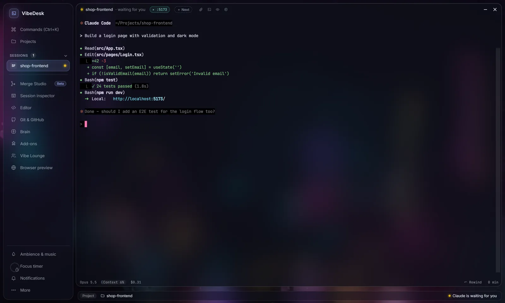

VibeDesk/Sessions
Every session at a glance.
Run several Claude Code sessions in real terminals, side by side. VibeDesk shows which one is working, which one waits for you and which one is done – and lets you answer without searching.
Sessions
Approvals
Answer Claude without hunting for the terminal.
When Claude wants to run a command or change a file, a card appears in the corner – and on your phone at the same time. Allow, Always or Deny, or In terminal for Claude's usual prompt.
- Only one card at a time; the rest waits behind “+n more”, and “waiting for you” always comes first.
- Several “done” messages are bundled into one.
- While VibeDesk is in the background you get Windows notifications, and a history sits behind the bell.
- During focus rounds only the important ones come through.

Prompt queue · Quick prompt
Line up the next task.
Click + Next in the title bar of a terminal and write what should happen after this. The prompt starts by itself as soon as Claude is done. Reorder or remove queued prompts at any time.
- Ctrl + Alt + Space opens an input field over any app – Tab picks the session, Enter sends.
- If Claude is still working, the quick prompt goes into the queue.
- Resume earlier sessions with one click from the projects window.
Usage limit
Hit the limit at night, continue at the reset.
When Claude reports “You've hit your session limit · resets …”, VibeDesk reads the reset time. A chip in the title bar shows when it continues, and once the limit is free again VibeDesk tells Claude to pick up exactly where it left off. One click on the chip cancels it; you can switch it off in the terminal settings.
- With Claude Pro or Max the status line under the terminal shows how much of the 5-hour limit is used – hover for the weekly limit and when both reset. Also in the Studio status bar and on your phone.
- A quiet hint at 75 % and 90 %, and a note when a full limit is free again. The numbers come straight from Claude Code.
Plan mode
Read the plan, then say go.
When Claude presents a plan in plan mode, it appears as a readable card – headings, lists and code instead of tool JSON. Let’s go approves it; Change … sends Claude your feedback (“please no new dependencies”) and Claude revises the plan. The same card works on your phone.
Watchdog
Someone keeps an eye on the long runs.
VibeDesk speaks up when a session shows no sign of life for six minutes, fails at the same command three times in a row, or its context is 85 % full – each time with a fitting next step. The same messages reach your phone.
Inspector
Know what every agent is doing.
One tabbed window with a live feed of every action, todo progress, a tree of subagents and stats: context usage, tokens, cache hits and the estimated cost per session and per day.
- Click a file in the feed and the editor opens exactly where Claude changed it.
- Under every terminal: model, context, cost and runtime – and a Rewind button that takes conversation and code back to an earlier step.

Two layouts
Floating windows or a calm studio.
Desktop gives you free glass windows and a dock. Studio puts a sidebar on the left, opens every window as a full page and adds a status bar with project, branch, uncommitted changes and what Claude is doing. Switch in the settings or the command palette.

The terminal
Feels like Windows Terminal.
Copy & paste
Ctrl + C copies a selection, Ctrl + V pastes – screenshots too: Claude gets the image path.
Clickable links and paths
URLs open in the browser, localhost in the preview, src/app.ts:42 in the editor at that line.
Search and zoom
Ctrl + F searches, Ctrl + +/- changes the font size.
Attachments
The paper clip opens the file dialog; a list shows whether a file is sent and whether Claude has read it.
PowerShell next to Claude
One click opens a shell in the project folder beside the session.
Survives a reload
After reloading the window with Ctrl + R, running sessions and shells come back with their history.
Let Claude work.
Step in when it counts.
Free for Windows 10 and 11.